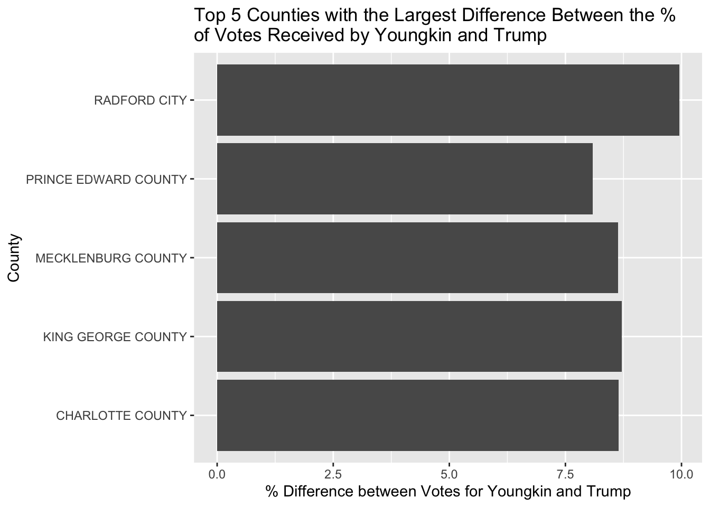
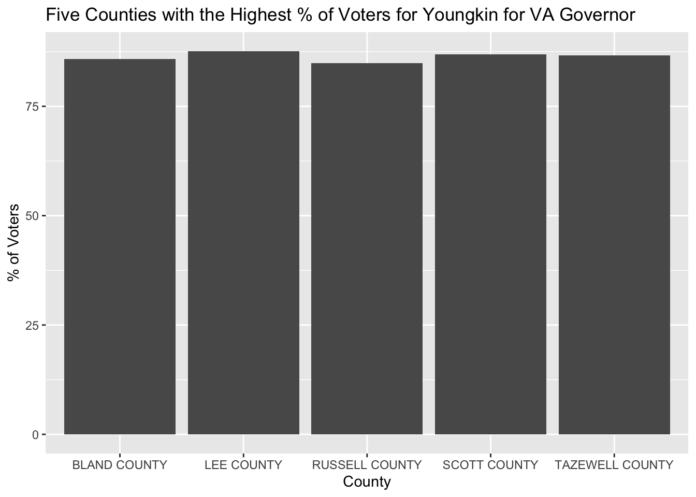
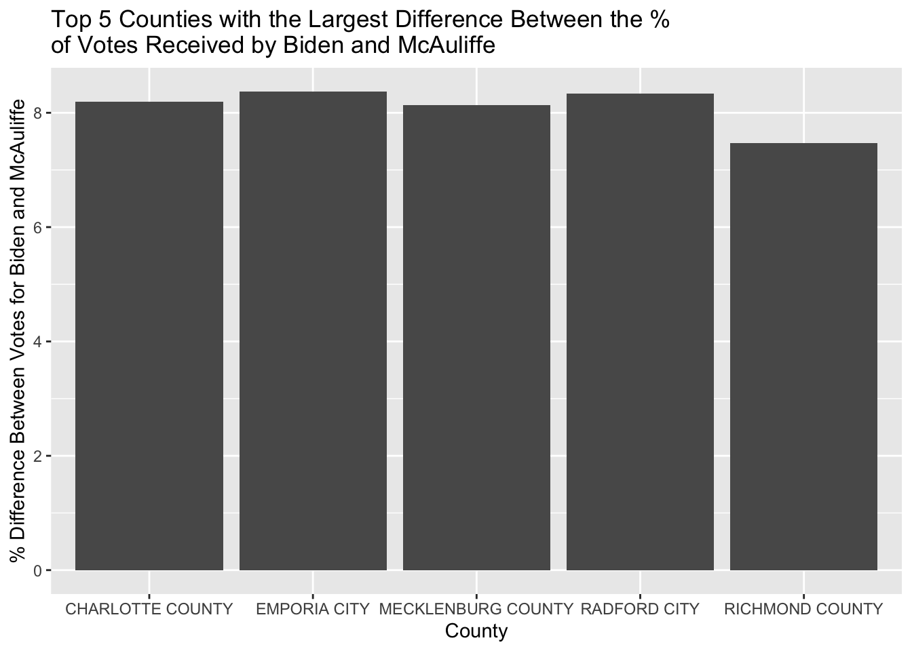
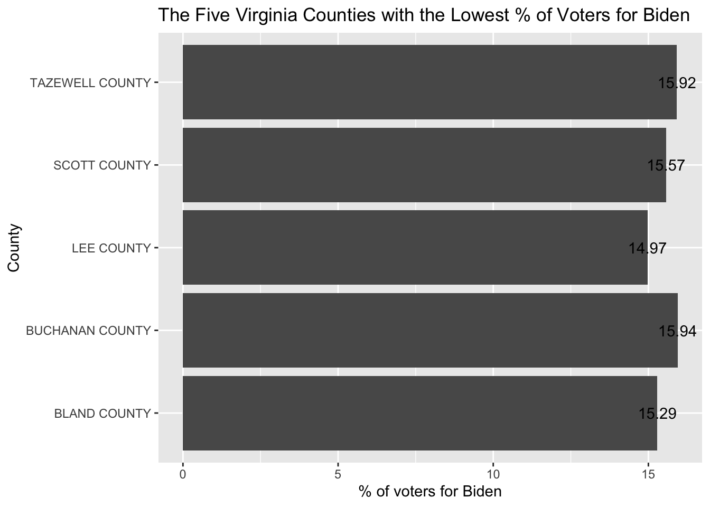

The following analysis is based on a combined data frame showing presidential and gubernatorial 2020 election results of different Virginia counties. The columns show the number of votes for presidental canidates Joe Biden (D) and Donald Trump (R), and gubernatorial candidates Terry McAuliffe (D) and Glenn Youngkin (R). Additional columns highlights the percent of votes each candidate got in their respective elections. This analysis provides insight on how Virginians voted. It is interesting to see the differences in voters’ preferences across counties.
The data used can be seen, downloaded, and filtered in the first table below. The original data used to create this dataframe was collected from virginia.gov. The base dataset can be downloaded from the table.
#These are the R packages that need to be loaded to run the following exercises. library(readxl)library(ggplot2)library(DT)library(tidyverse)
Open the data frame using read_excel and assign it to the variable va_df. Using the mutate() function and as.factor(), we can change the locality column’s data type from character to factor. This will allow us to create a drop down selection to filter the following table by county.
The following code snippet will create an interactive, paginated data table of the data set saved under va_df. The code below uses datatable() from the package DT to build an interactive table of the va_df data. The buttons extensions allows viewers to copy and download the data as their preferred file format.
In the next chunk of code, we will look at the counties with the greatest difference between the percent of voters for Youngkin and the percent of voters for Trump. First we have to add a new column to the va_Df data frame using the function mutate(). For each county/row, we will subtract the percent of Trump voters from the percent of Youngkin voters and save the value to a new column called diff_pct_vote_r. Next, we create a subset of va_df and save it under top5_diff_r. The subset is created by arranging the percent difference between Youngkin and Trump voters from highest to lowest and taking the top 5 values. Using the new dataframe, top5_diff_r, we will make a barchart with the ggplot package. ggtitle(), xlab(), and ylab() label different parts of the final graph.
va_df <- va_df %>%mutate(diff_pct_vote_r = pct_youngkin - trump_pct )top5_diff_r <- va_df %>%arrange(desc(diff_pct_vote_r)) %>%head(5)ggplot(top5_diff_r, aes(y=locality, x=diff_pct_vote_r))+geom_col()+ggtitle("Top 5 Counties with the Largest Difference Between the % \nof Votes Received by Youngkin and Trump")+xlab("% Difference between Votes for Youngkin and Trump")+ylab("County")

Exercise 2
In the next chunk of code, we will create a chart that shows the 5 counties where Youngkin got the highest percent of votes. The first step is to create a subset of va_df that only shows the 5 counties where Youngkin got the highest percent of votes. We will nest desc() in arrange() to sort the data, and then take the first five counties with head(), and save the results to top5_youngkin. We can now graph top5_youngkin using the ggplot package. ggtitle(), xlab(), and ylab() label different parts of the final graph.
top5_youngkin <- va_df %>%arrange(desc(pct_youngkin)) %>%head(5)ggplot(top5_youngkin, aes(x=locality, y=pct_youngkin))+geom_col()+ggtitle("Five Counties with the Highest % of Voters for Youngkin for VA Governor")+xlab("County")+ylab("% of Voters")

Exercise 3
The following code walks through how to create a table that shows the five counties where McAuliffe got the highest percent of votes for governor. The first step is to create a subset of va_df that only shows the 5 counties where McAuliffe got the highest percent of votes. We will select the locality and pct_mcauliffe columns, then nest desc() in arrange() to sort the data from highest to lowest, and then take the first five counties with head(), and save the results to top5_mcauliffe. We then create a table from the subset of data using the datatable function from the DT package. To make the table simple, we remove row names, searching, and paging by setting the arguements to FALSE.
The five localities with the largest percent difference between votes for Biden and votes for McAuliffe are Charlotte, Emporia, Mecklenburg, Radford, and Richmond.We can reach this insight and the following graph by first adding another column to the original dataset. the diff_pct_vote_d column is calculated by subtracting pct_mcauliffe from biden_pct. We add the column to the data frame by using the mutate() function. The following code takes only the locality, biden_pct, pct_mcauliffe, and new diff_pct_vote_d column from the va_df data, and sorts the rows by diff_pct_vote_d from highest to lowest. head(5) means only the top 5 rows are saved to the data subset top5_diff_d. We can now make a graph of the five localities with the biggest percent difference between Biden and McAuliffe voters using ggplot(). ggtitle(), xlab(), and ylab() label different parts of the final graph.
va_df <- va_df %>%mutate(diff_pct_vote_d = biden_pct - pct_mcauliffe )top5_diff_d <- va_df %>%select(locality, biden_pct, pct_mcauliffe, diff_pct_vote_d) %>%arrange(desc(diff_pct_vote_d)) %>%head(5)ggplot(top5_diff_d, aes(x=locality, y=diff_pct_vote_d))+geom_col()+ggtitle("Top 5 Counties with the Largest Difference Between the % \nof Votes Received by Biden and McAuliffe")+xlab("County")+ylab("% Difference Between Votes for Biden and McAuliffe")

Exercise 5
The five localities with the lowest percent of Trump voters are Petersburg, Charlottesville, Richmond, Falls Church, and Arlington. We can find this quickly using pipe operators. We assign low5_trump to select the columns locality, trump, and trump_pct. We then arrange the data from lowest to smallest value of percent of trump voters with the arrange function. Then we take the top 5 with head() and put it into an interactive table using the DT package. The resulting table is simple because we set the arguements for rownames, searching, and paging as FALSE.
The five counties with the lowest percent of Biden voters are Tazewell, Scott, Lee, Buchanan, and Bland. We can find this by first making a subset of va_df. First, we select only the locality and biden_pct columns. Then we arrange biden_pct from lowest to highest value. Then we take the first five rows using the head() function. We save this subset to low5_biden. The following code creates a visualization of low5_biden using ggplot notation. ggplot(). ggtitle(), xlab(), and ylab() label different parts of the final graph.geom_text() labels each bar with the corresponding percent of Biden voters.
low5_biden<- va_df %>%select(locality, biden_pct) %>%arrange(biden_pct) %>%head(5)ggplot(low5_biden, aes(x=biden_pct, y=locality))+geom_col()+ggtitle("The Five Virginia Counties with the Lowest % of Voters for Biden")+xlab("% of voters for Biden") +ylab("County") +geom_text(aes(label = biden_pct))

Extra Credit
The following code creates a function called sort_biden_vote. To use the function you insert a number and it will return the number of counties with the lowest percent of Biden voters. For example, if you typed sort_biden_vote(15), it would return the 15 Virginia counties with the lowest percent of voters for Biden. First, we assign sort_biden_vote to a function that takes one input arguement The function takes the locality, biden, and biden_pct columns from the va_df dataset and orders it by biden_pct from lowest to highest. It then uses head() with the user input and the DT package to return an interactive table that shows the corresponding number of counties with the lowest percent of voters for Biden.